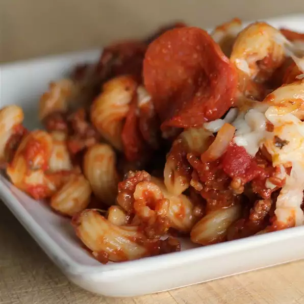

Pizza Pasta

Description
Very easy to make, and kids will love it! Garnish with your
favorite pizza toppings, such as sliced black olives.
Ingredients
- 8 ounces rotini pasta
- 1 pound lean ground beef
- 1 small onion, diced
- 1 (28 ounce) jar spaghetti sauce
- 4 ounces sliced pepperoni sausage
- 2 cups shredded mozzarella cheese
Steps
- Preheat oven to 350 degrees F (175 degrees C).
- Bring a large pot of lightly salted water to a boil. Add pasta and cook for 8 to 10 minutes or until al dente; drain.
- In a medium skillet over medium-high heat, cook beef with onion until beef is brown. Drain. Combine beef mixture with spaghetti sauce, pepperoni and cooked pasta and pour into a 9x13 inch baking dish. Top with mozzarella.
- Bake in preheated oven for 30 minutes, until cheese is melted and golden.